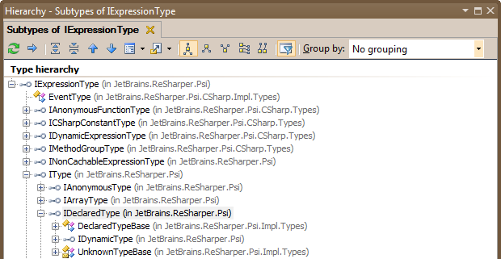
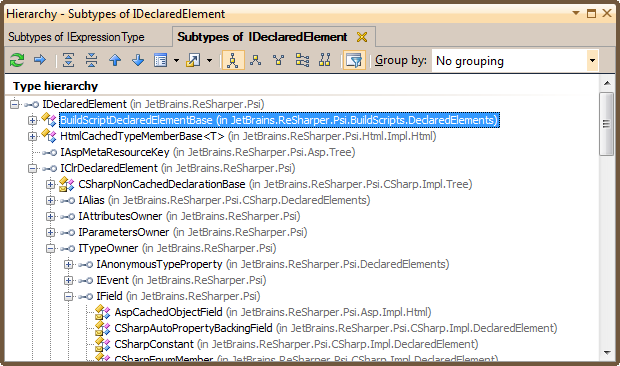

类型系统
任何一种面向对象的结构的操作必然涉及与类型 ，如工作int ， string或者说MyType 。可以预见，ReSharper具有许多数据结构，允许插件编写者识别和自省类型，无论这些类型是否可作为代码使用。
IExpressionType

在“类型层次结构”的最顶部，我们有IExpressionType接口。这是一个广泛的接口，涵盖了表达式可能是的任何类型，并且恰好涵盖了主要的“具体”接口IType 。
除了IType ，直接实现的接口和类IExpressionType通常是特定于语言的。此类表达类型的示例包括C＃ EventType或VB的IVBNothingType 。
的IExpressionType定义所有表达式类型都遵守的基本接触。因此，描述其某些成员是有意义的。
IsResolved-此属性告诉我们此类型是否实际上已经解析为某种东西。例如，如果表达式类型为StringBuilder，ReSharper会将其解决System.Text.StringBuilder。但是，如果表达式类型为Foo此类还不存在，IsResolved将是错误的。这也涵盖了类型替换的棘手问题，我们将在后面讨论。IsUnknown-确定此类型是否未知，即无法正确显示。IsValid()-检查类型是否引用有效的声明元素 。IsImplicitlyConvertibleTo()和IsExplicitlyConvertibleTo()检查此类型是隐式还是显式可转换为某种类型（IType）通过类型转换规则 。类型转换规则本身就是实现ITypeConversionRule接口。例如，要使用C＃类型转换规则，可以使用CSharpTypeConversionRule.Instance。
那哪里呢IExpressionType用过的？好吧，最明显的例子是，如果您有一个表达式（即IExpression ），您可以使用GetExpressionType()获得表达式的方法IExpressionType 。当然，在大多数情况下，表达式类型应该是实际的对象类型，在这种情况下，调用IExpressionType.ToIType()方法。当然，它会返回null如果所讨论的表达式不是IType 。
现在让我们来看看IType接口。
类型
的IType接口用于表示各种类型构造-不仅是单个类型，还包括匿名类型，数组，指针等构造。
IType也是一个界面，其中有一些我们需要讨论的成员：
GetPresentableName-这将返回特定语言（例如C＃或VB.NET）的可显示类型的名称。在使用最短和最简洁的字符串的意义上，返回的字符串是“可表示的”。例如，一个32位整数将在C＃中显示为int并不是System.Int32。GetScalarType()返回一个声明的类型 ，该类型与该类型的“标量”部分相对应。所以，如果你IType碰巧是int *（指向int），返回IDeclaredType将对应于int。Classify是一个属性，可帮助您确定类型是值还是引用类型。null如果无法确定，则返回。
在所有实现的接口中IType ，我们最感兴趣的是IDeclaredType ，因此让我们讨论所有内容。
IDeclaredType
的IDeclaredType是使用类型时最常看到的接口类型。本质上， IDeclaredType是可能具有声明的类型的接口（即，它可能对应于某些ITypeElement ）。声明类型的示例可能是int要么Foo ，前提是您有以下声明Foo ， 当然。
界面最重要的成员是GetTypeElement() ，可能会返回一个对应的ITypeElement要么null如果没有人。其他成员包括：
GetClrName()-返回CLR名称（IClrTypeName）的类型。然后，可以使用此接口来获取类型的简称和全名，获取该类型的名称空间名称的列表，依此类推。GetSubstitution()-返回为此类型创建的替代。替代是用具体类型替换类型参数（即通用参数）的机制。Resolve()尝试解决此类型。所结果的IResolveResult的IsValid()可以调用方法检查解析是否成功。IsSubtypeOf()-确定此类型是否为其他类型的子类型IDeclaredType。
但这还不是全部！除了以上成员外，还有一个DeclaredTypeExtensions类，提供其他实用程序方法。例如， GetSuperTypes()方法返回的枚举IDeclaredType对应于此类型的父母。
我们已经研究了类型的层次结构，但这对我们有什么帮助？好了，现在我们对类型有所了解，我们可以开始研究另一个层次结构- 声明元素的层次结构。
IDeclaredElement

的IDeclaredElement是ReSharper的über界面，用于定义ReSharper中的各种物理语言结构。从物理上讲，我们假定已经为它们构建了PSI树，换句话说，我们具有定义此元素的源代码。声明的元素不仅用于表示不同的构造（例如CLR类或CSS函数），而且还表示结构的不同方面。
让我们尝试从上到下的概述IDeclaredElement首先查看其成员以了解其接口及其实现者。
GetDeclarations()返回声明（即，IDeclarations）此声明的元素包含。我们将在一段时间后声明。ShortName返回已声明元素的“友好名称”。GetElementType返回声明的元素的类型。该值通常与语言有关，即对于C＃元素，例如CSharpDeclaredElementType。PresentationLanguage影响用于创建此类型的语言。GetSourceFiles()返回的集合IPsiSourceFile包含此类型定义的`。（请记住，由于partial类型，类型定义可以跨越多个文件。）HasDeclarationsIn()使您可以检查已声明元素的任何声明是否出现在特定文件中。
让我们在继承层次结构中向下钻取一层，并讨论各种声明的元素类型。
声明的元素类型
大部分类型IDeclaredElement是反映平台特定或语言特定的声明元素的接口。当前，已声明CSS，HTML，JavaScript，Razor，CLR语言等元素类型。还有一些非常具体的声明元素，例如ILabel之所以出现在这个阶段，仅仅是因为没有其他合适的位置。
在本指南的背景下，我们将看一下IClrDeclaredElement接口，可预测地反映了CLR（C＃，VB.NET）语言的声明的元素。
IClrDeclaredElement
该接口包含很多内容，其主要职责是描述其实现者是CLR声明的元素。除了产生一个IPsiModule句柄，它也可以通过以下方式返回其包含类型（如果有） GetContainingType()或通过包含类型成员GetContainingTypeMember() 。
这个接口对我们很有趣，因为它具有直接的后代。值得一提的是：
IAttributesOwner-该接口由可以用属性修饰的任何声明的元素实现。通常，您将使用此接口来操纵某些元素已附加到其上的属性。IParametersOwner-如果声明元素采用参数（请注意，我们所说的是普通参数，而不是类型参数），则此接口可帮助我们操纵它们。ITypeOwner-表示已声明的元素具有自己的类型。ITypeParametersOwner-表示此声明的元素具有类型参数。示例是类和方法。
ITypeElement
在讨论此类类型时 ，让我们讨论CLR类型及其公开方式。沿着继承层次结构走下IClrDeclaredElement我们首先遇到ITypeParametersOwner如前所述，该接口由可以具有类型参数的任何构造实现。此接口仅公开一个属性，列出了ITypeParameter与类型参数相对应的对象。
但是，更有趣的是接口继承自它。这个接口叫做ITypeElement 。此接口的重要意义在于它表示CLR类型，例如类，结构，枚举或委托。该接口被诸如以下的接口继承IClass ， IStruct ， 等等。让我们讨论它的一些成员：
NestedTypes-此属性本身是ITypeElement代表嵌套类型的实体。Constructors，Operators，Methods，依此类推-所有这些属性都会产生适当类型成员的枚举。GetMembers()-帮助您将以上所有内容汇总到一个列表中ITypeMember实体。GetContainingNamespace()-完全按照说的做，并可能返回null如果类型不在名称空间之内（即，它在全局范围内）。
还有一个TypeElementExtensions提供其他功能的类。例如，要检查某个类型是否为另一种类型的后代（即，在继承链中某位置的另一种类型之上），可以使用IsDescendantOf()方法。